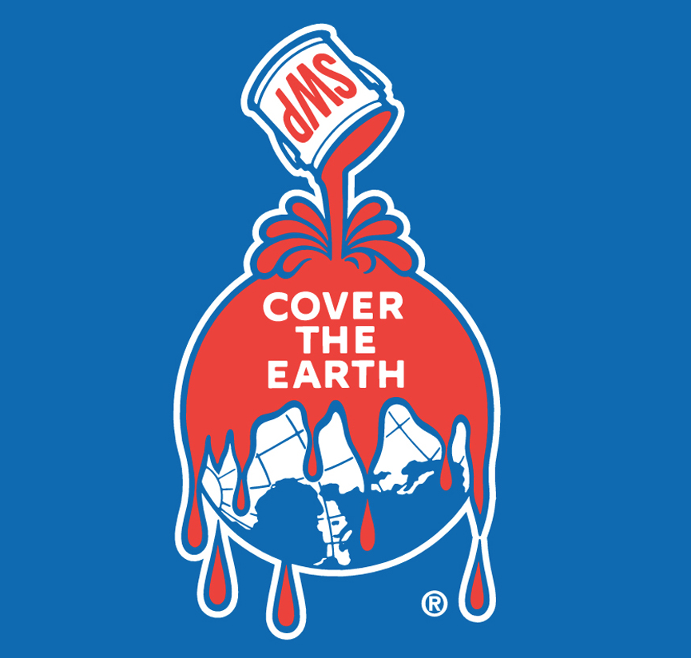

About Me

Hi, I'm Ethan — a software engineer and game developer studying Computer Science at Case Western Reserve University.
I'm passionate about solving challenging problems and building things that matter. From systems programming and AI model training to creating gravity-flipping platformers in Unity, I love turning ideas into practical, enjoyable experiences.
What drives me most is variety: exploring new puzzles, mastering new tools, and discovering fresh ways of thinking. I'm always chasing that spark when everything clicks, and I aim to build projects that inspire that same feeling in others.
I'm open to new ideas, collaborations, and conversations — feel free to reach out!
Education
Case Western Reserve University

I am currently a fourth-year undergraduate candidate for a B.S in Computer Science with a concentration in Software Engineering and minor in Game Development at
Case Western Reserve University. Throughout my studies, I have gained hands-on experience in
software development, full stack web development, artificial intelligence, and game design. I maintain a 4.0 GPA, and have been recognized
for my achievement with placement on the Dean's High Honors list in every semester of my enrollment.
IES Abroad Barcelona

During the summer of 2024, I participated in a study abroad program in Barcelona, Spain, where I completed a professional internship as part of IES Abroad’s Summer Internship Program. While working abroad, I had the opportunity to adapt to new workplace and social norms, and to immerse myself in the local cuisine, vibrant culture, and rich history of Catalonia and Spain. This experience not only sharpened my adaptability and cross-cultural communication skills but also deepened my global perspective, both personally and professionally.
Current Employment
Software Engineer Intern
RoviSys

As a Software Engineer Intern at RoviSys, I work on client projects involving Manufacturing Execution Systems (MES) and large-scale software migrations. I develop and maintain full-stack MES applications, integrating APIs and middleware to meet client production needs.
I also design and implement Python tools that automate XML translation and build scalable data pipelines to support client data migration efforts. I collaborate with systems engineers to architect solutions and define technical requirements tailored to specific client environments.
This role allows me to deliver impactful software solutions that directly support client operations and business goals.
Prior Employment
Software Engineering Extern
Sherwin Williams - CWRU xLab

As a Software Engineering Extern at Sherwin Williams through Case Western Reserve University's xLab program, I developed digital twins using Unity and NVIDIA Omniverse for 3D data visualization and interactive XR workflows.
I integrated three separate VR/AR tools—including machine diagnostics, an information HUD, and navigation—into a unified, interactive prototype. Additionally, I researched, pitched, and demonstrated immersive VR/AR solutions to business leaders, driving R&D efforts and enhancing employee safety. This role provided hands-on experience solving complex problems and consolidating disparate data systems into cohesive, accessible platforms in collaboration with industry professionals.
Undergraduate Researcher
SDLE Research Center - MDS3

As an Undergraduate Research Assistant at Case Western Reserve University’s SDLE Research Center, specifically within the MDS3 lab, I automated batch ETL processing of over 10,000 chemical reaction records using parallel computing on a high-performance cluster. I co-designed a 12-table schema to restructure disorganized data for scalable reaction analysis. Additionally, I investigated Resource Description Framework (RDF) and graph database technologies to enhance data querying and management capabilities.
Previously, I contributed to the CASFER project, where I collected and categorized geospatial water datasets and integrated more than three years of satellite imagery into the laboratory database to support spatial analysis and sustainable nitrogen reclamation research. I also participated in independent research on chemical contamination following the 2023 East Palestine, OH train derailment.
Software Developer Intern
Circe Navigation, Smart Navigation Solutions

As a Software Developer Intern at Circe Navigation, an early-stage R&D startup in Barcelona focused on GNSS security, I developed embedded C software for STM32 microcontrollers to research and build a system for detecting and blocking GPS spoofing and jamming attacks. I created a data collection system that gathered over 16,000 GPS data points, which supported the training and refinement of a neural network designed to identify malicious signals.
In addition to the technical work, I immersed myself in a diverse international startup culture through the IES Abroad Internship Program, gaining valuable experience with cross-cultural collaboration, international business practices, and the entrepreneurial environment unique to Barcelona's tech scene. This blend of hands-on engineering and cultural insight helped me grow both as a developer and as a global professional.
Teaching Assistant
Case Western Reserve University - CSDS 293 Software Craftsmanship

As a Teaching Assistant for CSDS 293: Software Craftsmanship, I led two weekly discussion sections focused on software development practices including functional programming, test-driven design (TDD), code efficiency, and iterative development. I instructed students primarily in Java, emphasizing continuous design, TDD, functional programming, and thorough documentation to promote strong software craftsmanship.
In collaboration with the TA team, I reviewed code and provided detailed feedback to over 40 students, contributing significantly to their project grades and overall learning experience.